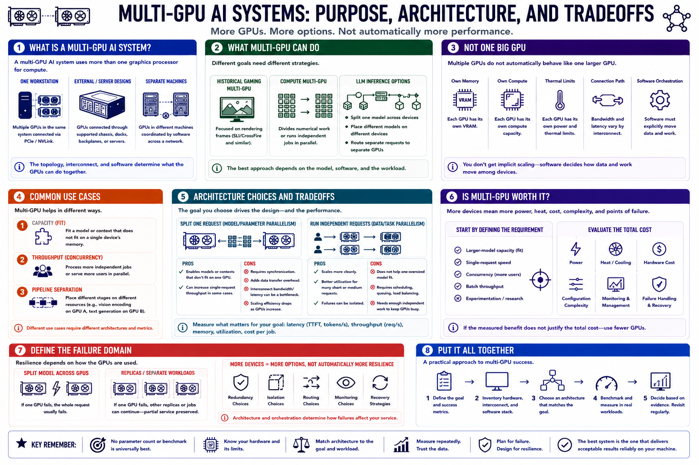

What Multi-GPU Means
Connecting to LMS... Progress: in progress

Narration
A multi-GPU AI system uses more than one graphics processor for compute. The GPUs may live in one workstation, connect through supported external or server designs, or operate in separate machines coordinated by software.
Gaming multi-GPU historically focused on rendering frames. Compute multi-GPU divides numerical work or independent jobs. Language-model inference may split one model, place different models on different devices, or route separate requests to separate GPUs.
Multiple GPUs do not automatically behave like one simple larger GPU. Each device has its own memory, compute, thermal limits, and connection path. Software must explicitly decide how model data and work move among them.
One use case is capacity: fitting a model or context that does not fit on one device. Another is throughput: processing more independent jobs or users. A third is pipeline separation, such as placing vision encoding and text generation on different resources.
These goals have different architectures and metrics. Splitting one request may add synchronization and transfer delay. Running independent requests can scale more cleanly but does not help one oversized model fit.
Multi-GPU is worthwhile when a measured workload justifies power, heat, cost, configuration, monitoring, and failure complexity. Start by stating whether the requirement is larger-model capacity, single-request speed, concurrency, batch throughput, or experimentation.
Also define the failure domain. One split model may stop when either GPU fails, while separate model replicas may preserve partial service. More devices increase options, but architecture determines resilience.